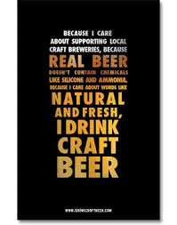
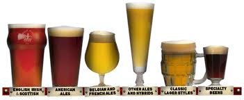

craft brew noun noun: craft beer a beer with a distinctive flavor, produced in small quantities and distributed in a particular region.  When trying to define craft beer, each beer lover has a unique interpretation and story of discovery to share. To make a true craft beer definition even more difficult, each individual beer brand is one of a kind. An American craft brewer is: Small Annual production of 6 million barrels of beer or less (approximately 3 percent of U.S. annual sales). Beer production is attributed to the rules of alternating proprietorships. Independent Less than 25 percent of the craft brewery is owned or controlled (or equivalent economic interest) by a beverage alcohol industry member that is not itself a craft brewer. Traditional A brewer that has a majority of its total beverage alcohol volume in beers whose flavor derives from traditional or innovative brewing ingredients and their fermentation. Flavored malt beverages (FMBs) are not considered beers.